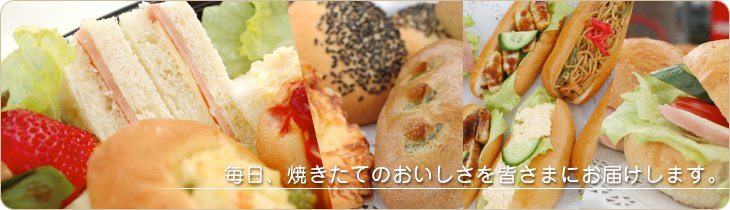
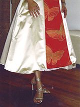
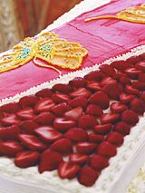
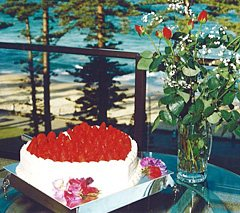

1984Established
A Japanese family owned bakery in Sydney.
Established in 1984, Fuji Japanese Bakery is a unique Japanese family owned bakery in Sydney. Bread with no additives, cakes, confectionery and handmade Japanese sweets.

- Today
- Opening hours
- Address
- 5 Tramore Place, Killarney Heights NSW 2087
Open in Google Maps
Products
Today’s shelf.
Put what you like on the tray, then read the list out when you call. Orders are taken in store and by phone.
All GST inclusive. No additional charges.
Order-made cakes
A Japanese-style cake for the day that matters.
Order-made cake price list (standard type), revised July 2024. Orders are currently taken in store and by phone only.
See the whole price table
- Kinds of cake
- Pick-up and delivery
- When to order
- Returns and exchanges
- Notes
Examples of order-made cakes



About the bakery
Since August 1984.
- Name
- Fuji Japanese Bakery Pty. LTD
- Established
- Representative
- Address
- 5 Tramore Place Killarney Heights NSW 2087TEL 02 - 9975 - 1095 / FAX 02 - 8901 - 0401
- Business
Where to buy
You can also find our bread at these stores.
Items you order can be collected at our bakery or at the stores below.
Order / Enquiry
Orders: by phone or in person.
02 9975 1095
- Order
- Price
- Payment
- Pick up and delivery